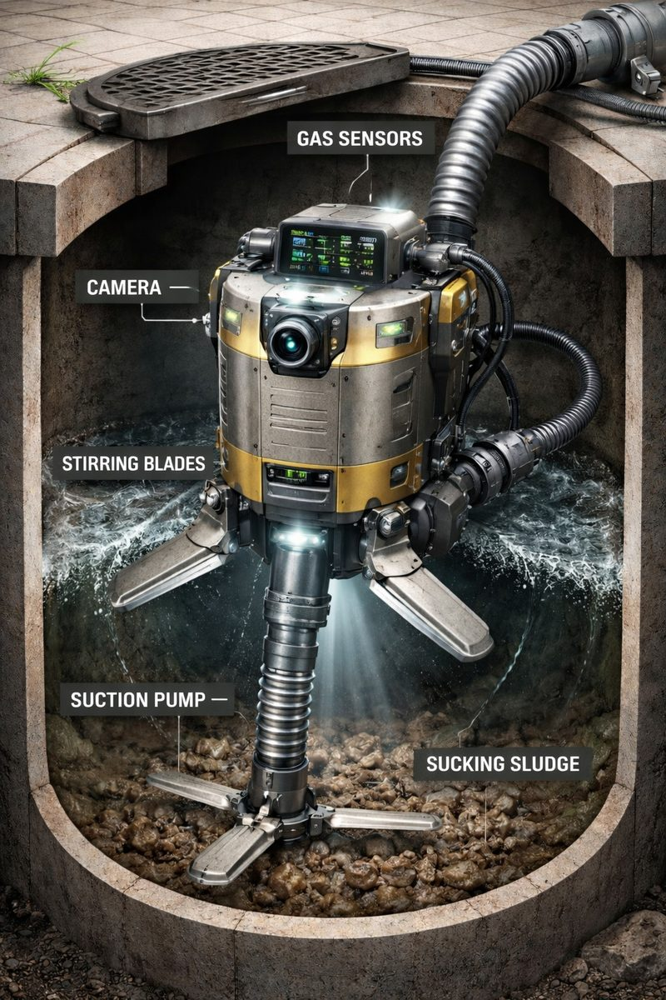
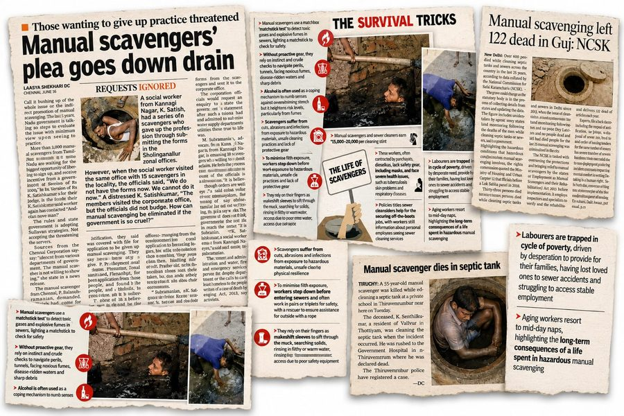
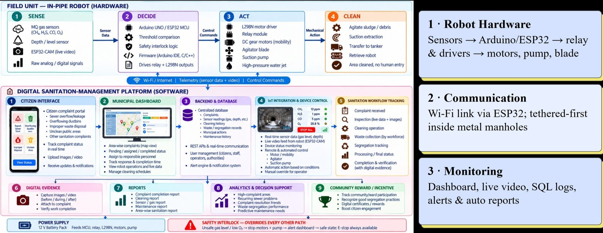
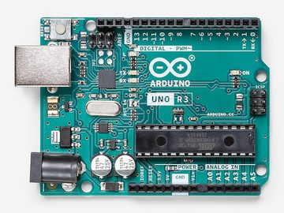
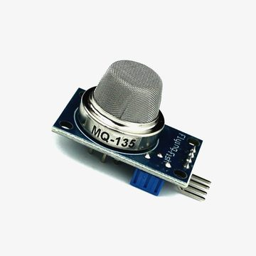
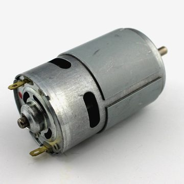
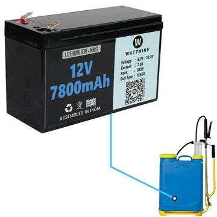
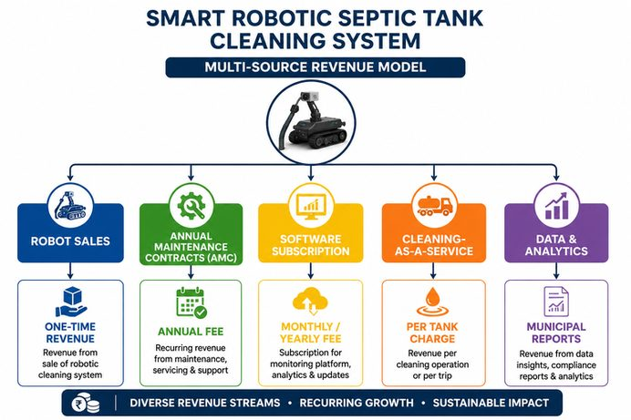

Smart Sanitation, Safer Lives
Smart Sewer Bot (SSB)
A compact, low-cost robot that senses, analyzes and cleans sewers, so no worker has to enter one.
- Remote operation
- Live gas sensing
- Stirring + suction
- Auditable reports

About our project
Sewer maintenance is dangerous: toxic gases and a lack of oxygen put workers at serious risk. Smart Sewer Bot uses sensors and automation to monitor gas levels and carry out pumping and cleaning from outside, keeping people out of harm’s way.
Objectives
- Detect toxic gases (H₂S, CH₄, CO) and low oxygen
- Reduce human involvement in sewer cleaning
- Build a low-cost automated solution
- Improve safety for sanitation workers
- Perform basic cleaning and pumping automatically
The problem
Sewers lack safe, continuous and integrated monitoring and maintenance. That means hazardous manual entry, late detection of abnormal conditions and slow removal of waste.
- Toxic gases (H₂S, CH₄, CO) and low oxygen
- ~500 deaths in sewers and septic tanks since 2019
- Manual, slow inspection with poor visibility
- No real-time hazard data for workers
- Overflow and blockage risk from slow cleaning

Our solution
A remote-operated robot. The operator stays outside, and the robot senses, cleans and reports. Unlike existing solutions that either inspect or clean, SSB gives a complete automated cycle: sludge agitation, intelligent sensing and efficient suction in one compact, affordable unit built for real-world Indian conditions.
No human entry
The operator works from outside the sewer.
Live visibility
Camera and depth sensing guide the operator.
Stirring + suction
Blades loosen sludge, a pump removes it.
Safety first
Unsafe gas stops motors and pump and sends an alert.
Low cost, modular
Easy to scale; core prototype electronics cost ₹1,800–3,800.
Government aligned
Supports NAMASTE, Swachh Bharat and smart-city programs.
How the project works
Six steps, always guarded by a safety interlock. Click a step to read more.
- 1Deploy
- 2Sense
- 3Inspect
- 4Agitate
- 5Extract
- 6Report
Core components
Sensors
MQ-series gas sensors (CH₄, H₂S, CO, O₂), depth/level sensor, pH sensor (planned).
Controller
Arduino UNO / ESP32 / NodeMCU with threshold comparison and safety-interlock firmware.
Camera
ESP32-CAM for live, low-light video inside the pipe or tank.
Agitator + pump
Motorized blades loosen sludge; a sludge pump removes it to a tanker.
Drive + relay
L298N motor driver, relay module, DC gear motors for mobility.
Power + link
12 V battery pack; Wi-Fi via ESP32, tethered-first inside metal manholes.
Flow chart
Robot decision flow
Try the safety interlock
Prototype chain
Full system architecture
Field unit (Sense → Decide → Act → Clean) plus the digital platform: citizen complaint portal, municipal dashboard, database, IoT control, workflow tracking, digital evidence, reports, analytics and community rewards. Tap to zoom.

Prototype in action
Our working prototype: a gas sensor feeds a microcontroller, which switches a relay that drives the motor/pump when readings cross the threshold. Core sensing, control and pumping are demonstrated; full robotic integration is next.




What makes us special
Our edge: sensing, agitation and suction in one low-cost, safety-first robot.
Compared with existing solutions
| Existing solution | Strength | Limitation | SSB advantage |
|---|---|---|---|
| Manual crews, vacuum/jetting trucks | Flexible, no robot cost | Toxic-gas exposure, labour-heavy, little digital data | No human entry; every job logged |
| CCTV crawlers | Good visual inspection | Inspection and cleaning are separate jobs | Sense, agitate and clean in one unit |
| Enterprise robots | Advanced mobility and tools | High cost (₹20–31 lakh+ benchmark), out of reach for small bodies | Affordable sub-enterprise tier |
| Other sense + clean entrants | Prove market demand | Software and data layers still immature | Safety trigger already demonstrated |
- Integrated workflow: sense → assess → agitate → suction → document as one purchase
- Low cost: aimed at smaller municipalities, contractors, hotels, hospitals and housing societies
- Safety demonstrated today: gas-threshold motor/pump control already works
- Data: every job produces auditable reports
Impact, business and roadmap
Benefits
- Social: protects workers, supports NAMASTE
- Economic: low-cost build, fewer man-hours
- Environmental: fewer blockages and overflows
- Data: auditable reports for every job
Who it is for
- Municipalities, sanitation departments, contractors
- Hotels, hospitals, apartments, malls, IT parks, industry
- ₹8,000+ crore Indian market and 3M+ septic tanks
Business model
Revenue from robot sales, rental/leasing for short sewer jobs, annual maintenance plans, software dashboards and analytics, and government project contracts. We start with contractors and facilities, then move to municipal tenders.

Beyond sewers
One robot base with swappable attachments can extend to lake and pond debris cleaning, wells and sumps, flood and emergency wastewater pumping, and water-quality monitoring (pH, turbidity, temperature), always with safe disposal of what is collected.
Roadmap and validation
- PrototypeArduino/ESP32, camera, gas and pH sensors, blades, suction pump
- Controlled testsSmall tanks: mixing, suction, sensor accuracy, shutdown time
- Field pilotLocal municipality or sanitation department
- Design freezeImprove from field feedback, safety certification
- ScaleLow-cost units for urban and rural use, smart-city integration